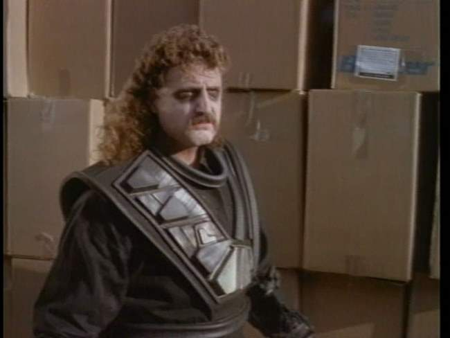
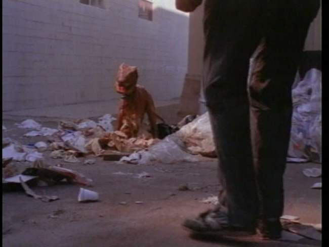
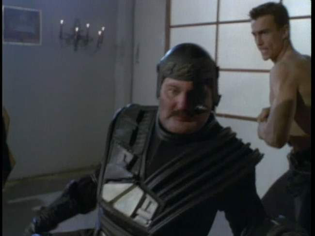

Movie review by : SFAM
Year : 1997
Directed by : Anthony Dublin
Written by : David Huey (story), Dom Magwili
Degree of Cyberpunk visuals : Very Low
Correlation to Cyberpunk themes : Very Low
Rating : 1/10
Key cast members :
Overview: Based on the very deceptive cyberpunk-looking DVD cover, I felt it wise to give Future War a brief mention - I say brief because this movie sucks so bad that anything more than brief would constitute more effort than was spent on the entire script. Now I would consider giving Future War the same treatment I gave Cybernator, but unfortunately I just can't possibly call this movie cyberpunk. Sure, it has time travel (I think), and these evil looking cyborg dudes, but Future War can't put together a semblance of even an incoherent plot to explain things.

Lets just start with the intro lines from the movie (punctuation and capitalization remain intact from the film - yes, some sentences have periods, others have capital letters at the beginning, but not all):
From the future traveled a master race of Cyborgs.
The made abductions from Earth's past.
The dinosaurs were trained as trackers
The humans were bred as slaves
Now a runaway slave escapes to a place his people call heaven...
we know it as Earth

Um, OK, so these master race of cyborg dudes, who incidentally get their asses kicked by a second rate martial arts guy (who in Matrix Reloaded, turns into the ultra-cool Agent Johnson) because they don't use their gun attachment till its too late, go back in time to get dinosaurs and train them to track escaped human slaves. Yeah, this works. Lets be clear here: some jackass with a spare $10,000 bucks wanted to make a really kewl film with cyborgs, dinosaurs and martial arts fighting ? oh oh! and also a hawt chick prostitute-turned-nun! ? unfortunately this was the best plot he could come up with.

Yes, nothing beats martial artists fighting master cyborgs in a warehouse church! Too bad the cyborg dude died in the last scene. Ah well, why not use the Jason resurrection thing? It works, right?
The Bottom Line: Pretty much the entire movie takes place either in the director's dive house or in this really dull looking warehouse. The warehouse is "decorated" with either cardboard boxes or well-used 8x8 wooden pallets standing upright, depending on whether its supposed to be a sewer (the pallets) or um, a warehouse (the cardboard boxes). Due to a neurotic use of forced perspective, the rubber dinosaurs are constantly changing size. They go from beaver-sized to allosaurus-sized, depending on the scene (well, OK, sometimes in the SAME scene). So, does the prostitute-turned-nun decide to have sex with Agent Johnson or will she say her final vows to become a nun forever? More importantly, who the fuck cares? I understand Future War was also featured on MST3K - I would recommend that route if you must watch this. And just for the record, Cybernator is LOADS funnier.